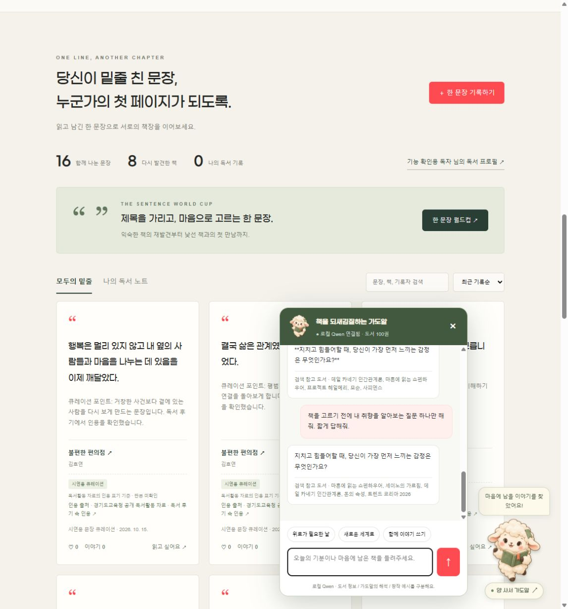

Qwen 모델을 Ollama로 본인 PC에서 실행하는 도서 대화 서비스입니다. 유료 AI API를 호출하지 않습니다. 이 정적 웹 데모에는 AI 서버가 연결되어 있지 않습니다.
ollama pull qwen3:4b-instruct-2507-q4_K_M 및 ollama pull qwen3-embedding:4b를 실행합니다.python seed_sentences.py를 실행합니다.powershell -ExecutionPolicy Bypass -File ./start.ps1로 서버를 실행합니다.http://127.0.0.1:8000/06-main.html에 접속합니다.아래는 프로젝트에 포함된 로컬 실행 캡처입니다. 시연 영상은 아직 첨부되지 않았습니다.
